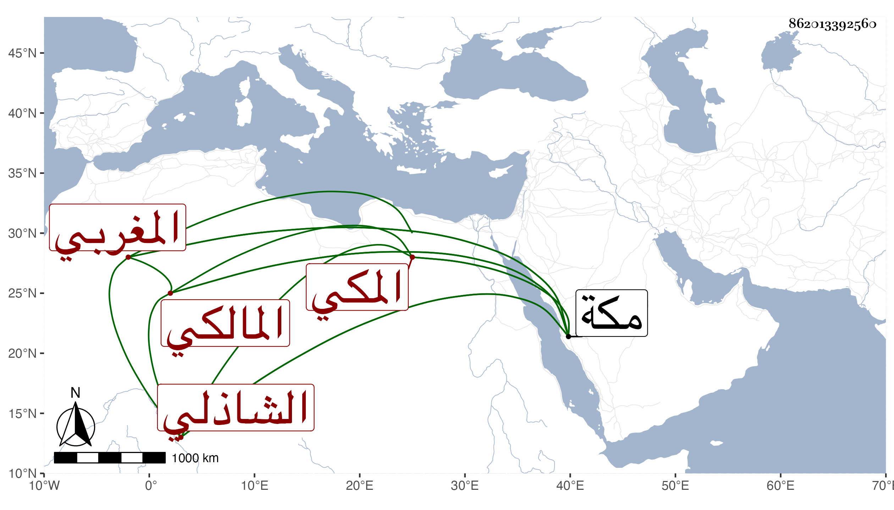

0902Sakhawi.DawLamic.ITO20230111-ara1.EIS1600.862013392560
Biography ID: 862013392560
798
عبد القادر بن الشيخ يحيى بن محمد بن يحيى بن أحمد بن علي المغربي المكي الشاذلي المالكي ولد في شعبان سنة أربعين بمكة وحفظ القرآن واشتغل وحصل على طريقة حسنة مات شابا بمكة في ضحى يوم الأربعاء خامس ربيع الثاني سنة إحدى وستين .
